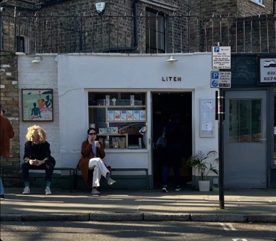
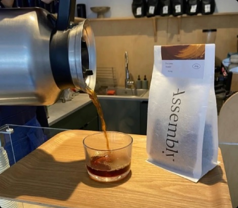
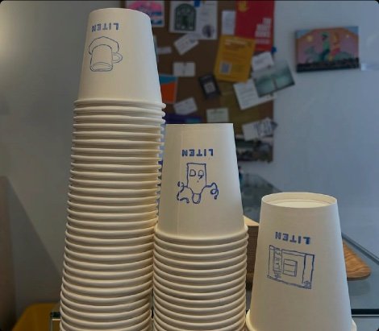
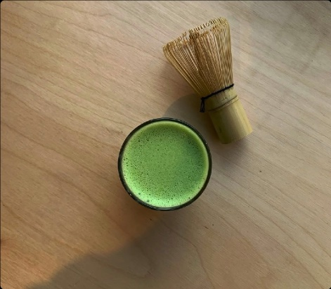

Borne out of a love for coffee and community, Liten is the neighbourhood stop for quality drinks and conversation.


Opened in 2022, we're a small cafe just by South Hampstead station serving Origin Coffee Roasters and a regular rotation of new, specially selected guest beans. We also prepare specialty teas, matcha and hot drinks with a daily stock of pastries, snacks and treats on our counter top from local bakeries. Selection of dairy, soy and oat milks served.
menusTo find out more about our food + drinks, take a look at our menus page :)


Small but mighty, we have indoor and outside seating space, our bench and high-counter stools. We also have a sister cafe — Dawn Seal, nearby in Maida Vale where we host Sunday Chess Club and other events.